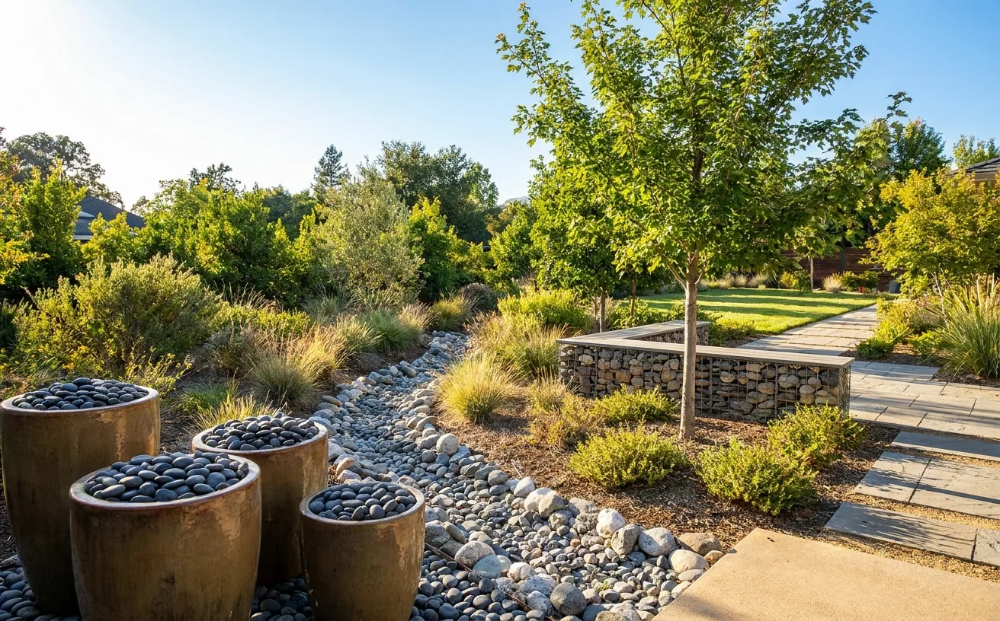
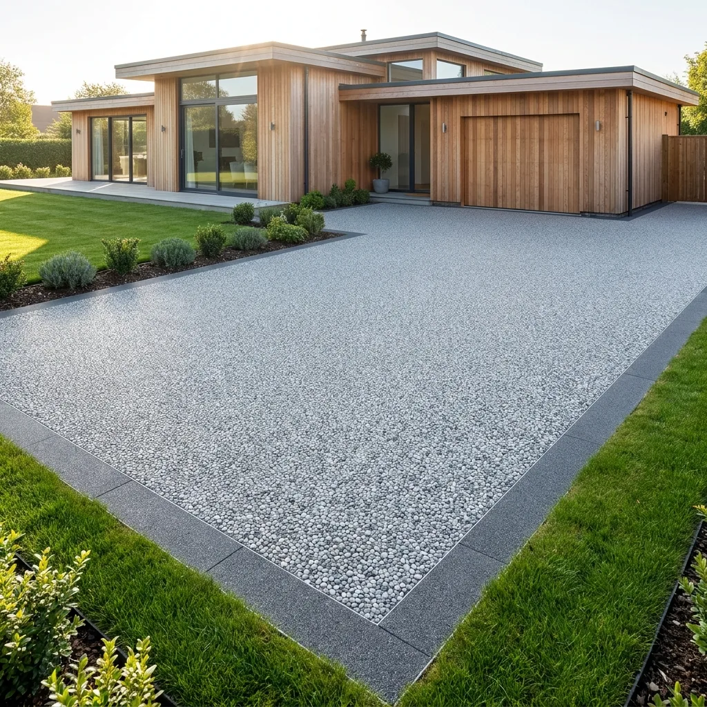
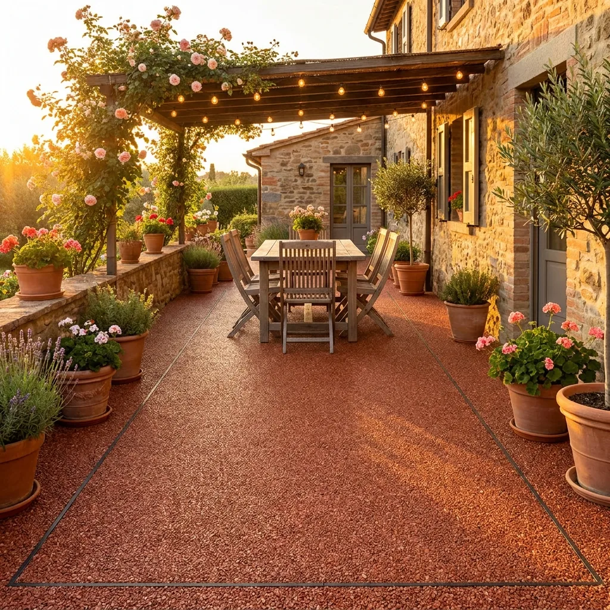
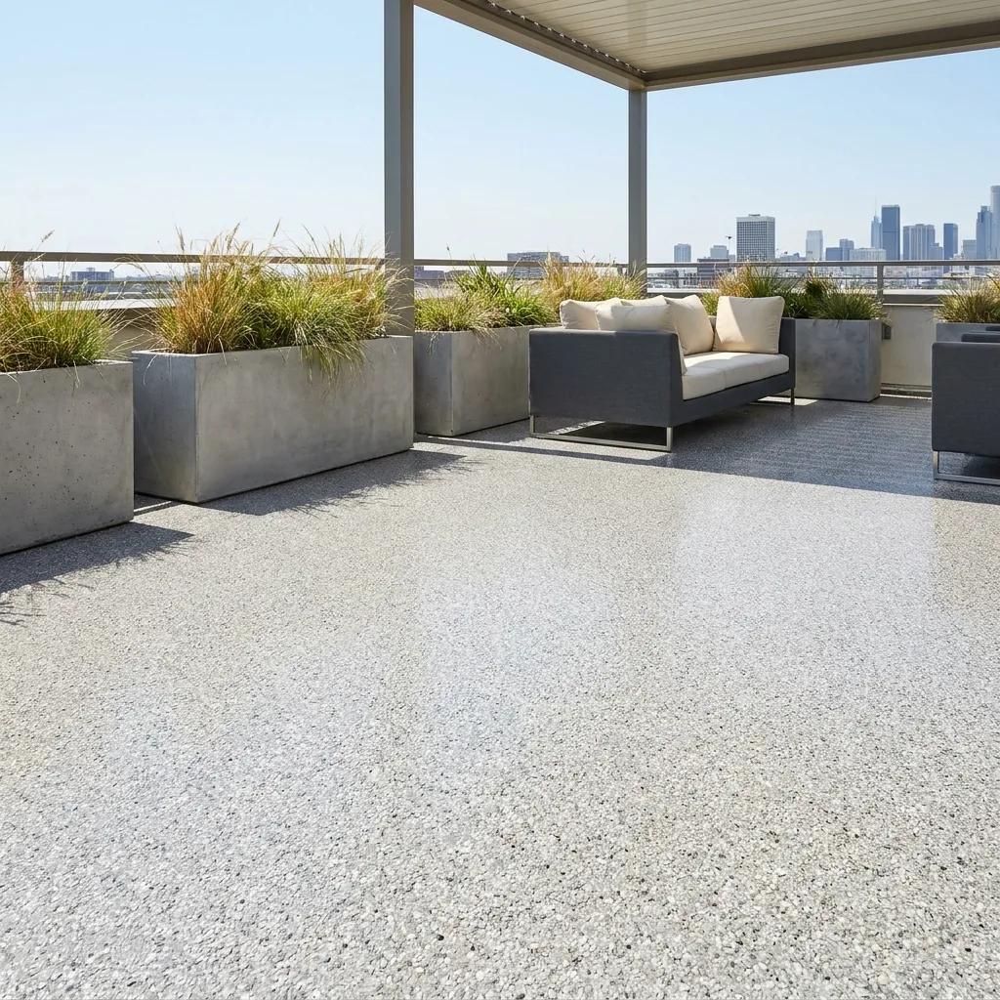
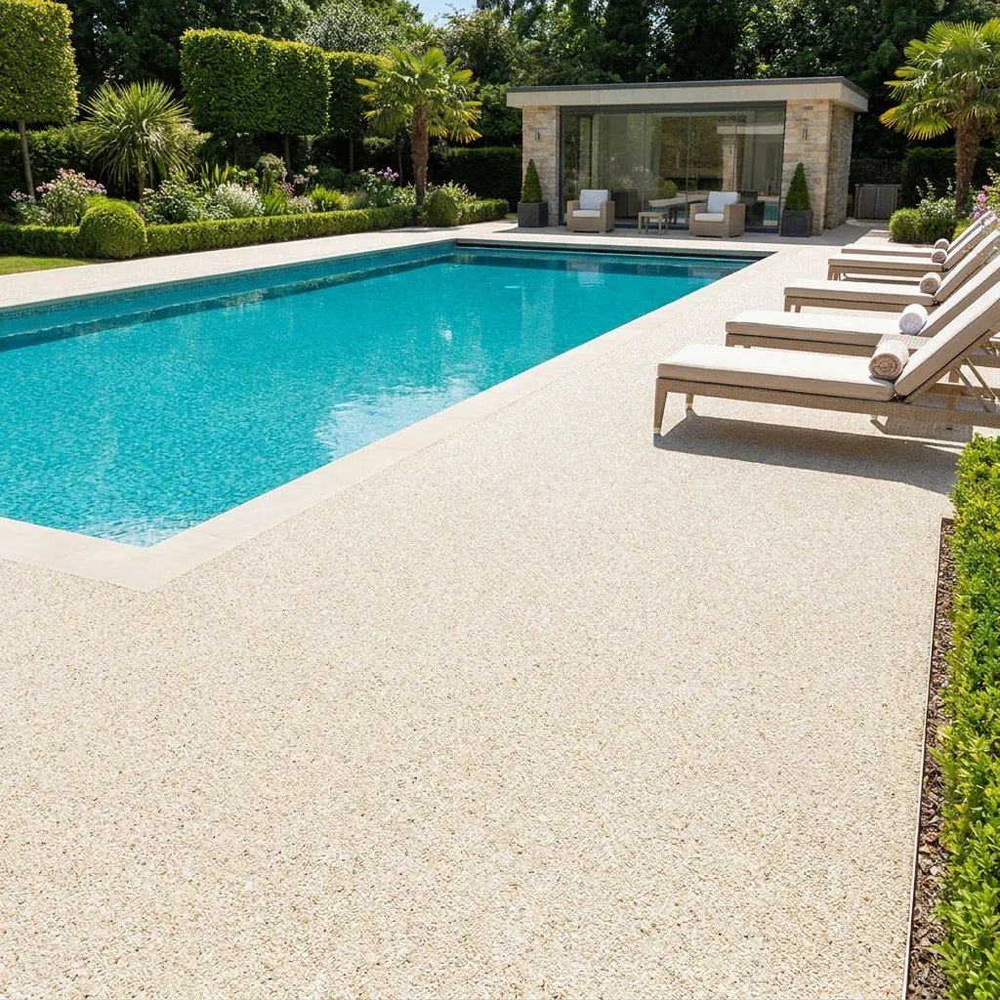
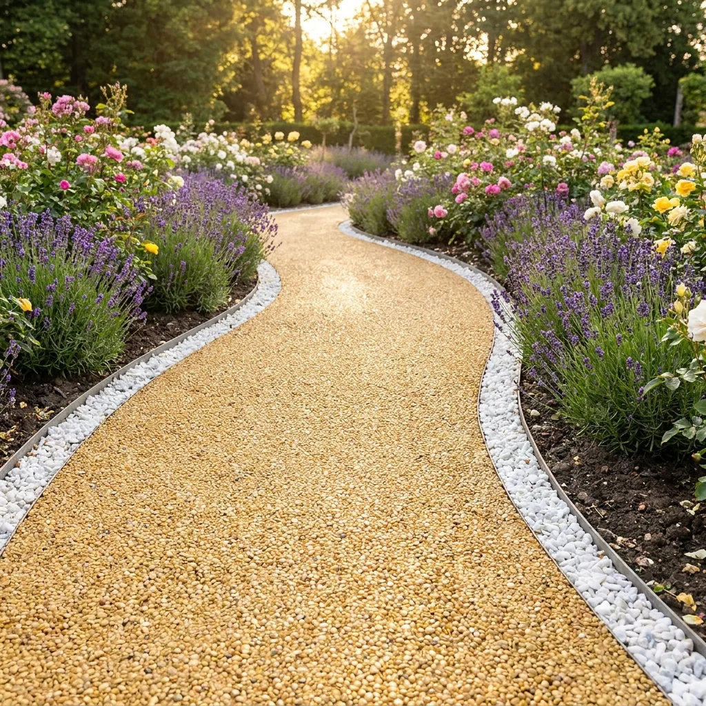
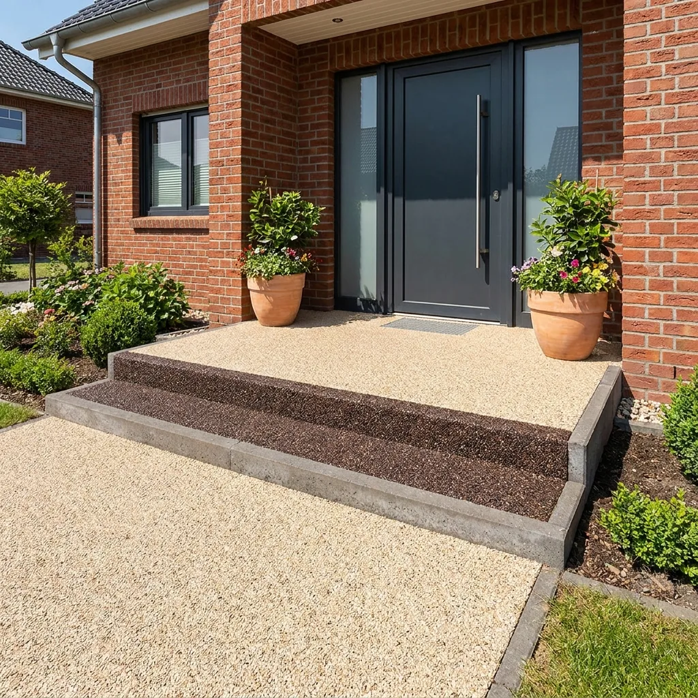
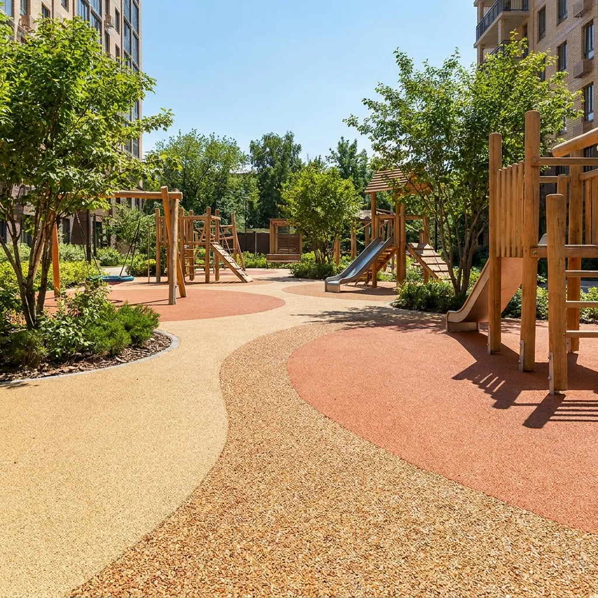
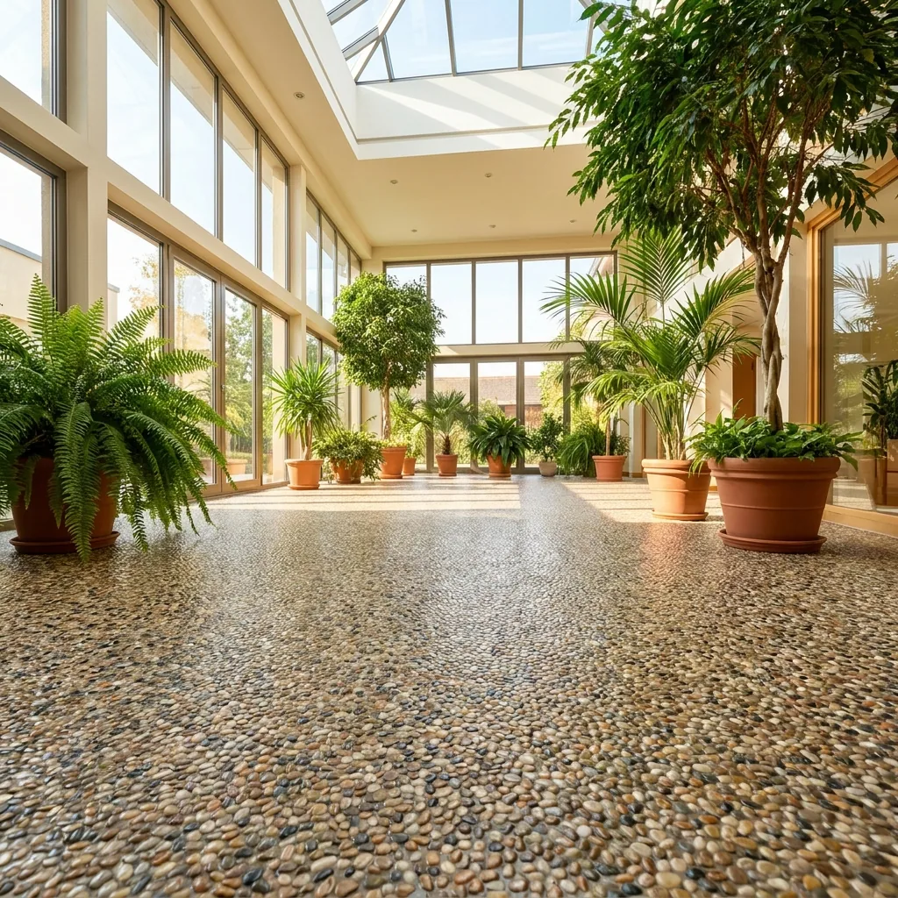

Применение
Приствольные круги и озеленение
Декоративная крошка для ландшафта в приствольных кругах, у деревьев и на зелёных участках. Цвет и фракцию выбирают по каталогу.
Ландшафт
Образцы крошки
Образцы каменной крошки. Для приствольных кругов и озеленения используют крошку для ландшафта: 14 камней по прайсу, фракции от 3–5 до 40–70 мм. Образцы можно заказать.
Все образцы

Приствольный круг
Декоративная крошка у дерева
Приствольный круг можно засыпать декоративной крошкой для ландшафта. Крошка аккуратно оформляет место у ствола и создаёт единый вид с соседними участками. Фракцию выбирают под размер круга: от 3–5 мм до 40–70 мм. В каталоге 14 камней: от змеевика салатового и яшмы красной до доломита чёрного и серого. Цвет подбирают под участок и посадку.
СвязатьсяОзеленение
Зелёные участки и улицы
Декоративную крошку используют в благоустройстве территории: на участках между деревьями, вдоль дорожек, на клумбах и в цветниках. Засыпка цветов в горшках и вазонах тоже делается из нашей крошки. Для озеленения важно выбрать цвет, который соответствует окружению. Вопросы водопроницаемости и поведения покрытия в зелёной зоне уточняйте у менеджера: +7 905 819-37-47.
Смотреть образцыЧто важно для ландшафта
- Натуральный камень — Крошка из натурального камня: мрамор, яшма, змеевик, гранит, златолит, речная галька.
- Выбор фракции — Фракции от 3–5 мм до 40–70 мм. Фракцию выбирают под размер круга и участка.
Преимущества
- Цвет — 14 камней для ландшафта и 18 образцов каменного ковра. Цвет подбирают под окружение.
- Опт и розница — Продаём оптом и в розницу. Мешки 10 кг и 20 кг, мягкий контейнер 1 т.

Дорожки и подъезды
Каменный ковёр для дорожек и подъезда к дому

Патио
Патио и площадки отдыха в цвете камня

Террасы
Ровное каменное покрытие террас

Вокруг бассейна
Светлый каменный ковёр у воды

Садовые дорожки
Дорожки между клумбами и газонами

Дворы
Дворы, крыльцо и площадки у входа

Детские площадки
Зоны вокруг игрового оборудования

Гостиницы и базы отдыха
Холлы, веранды и зоны отдыха
Приствольные круги и озеленение
Отсыпка клумб, вазонов и габионов
Приствольный круг
Круг у дерева на улице
Место у ствола засыпают декоративной крошкой для ландшафта.
Обсудить проектОренбургБиоСтрой56
«Камень сортируем на грохоте, промываем, сушим и фасуем — в мешки 10 и 20 кг или в мягкий контейнер на 1 т»
Пропускает ли покрытие воду?
Вопрос водопроницаемости уточните у менеджера: +7 905 819-37-47.
Какие фракции подходят для приствольного круга?
Фракции от 3–5 мм до 40–70 мм. Размер выбирают под круг и вид участка. Если нужен подбор, позвоните: +7 905 819-37-47.
Можно ли засыпать круг крошкой из нескольких камней?
Да, в каталоге есть миксы, например микс разноцветный.
Продаёте ли вы крошку оптом?
Да, оптом и в розницу. Упаковка: мешок 10 кг, мешок 20 кг, мягкий контейнер (биг-бэг) 1 т.
Как заказать образцы?
Нажмите «Заказать образцы» или позвоните: +7 905 819-37-47.
Как производится крошка
Сортировка на грохоте
Камень делим на фракции, например 3–5 и 5–10 мм. Для ландшафта фракции — от 3–5 до 40–70 мм.
Промывка и сушка
После грохота крошку механически промывают и сушат.
Фасовка 10–20 кг и 1 т
Мешки 10 кг и 20 кг, мягкий контейнер (биг-бэг) 1 т. Продаём оптом и в розницу.
Документы
Каталог продукции
Каталог и технические описания готовятся. Пришлём по запросу.
Запросить каталог